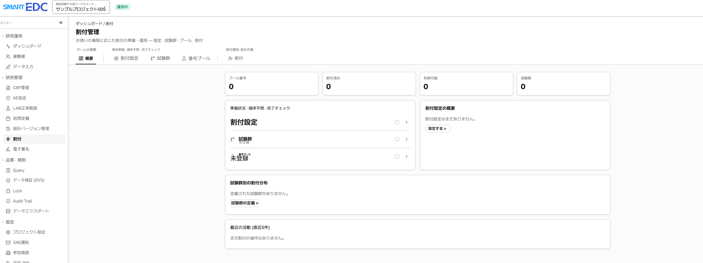
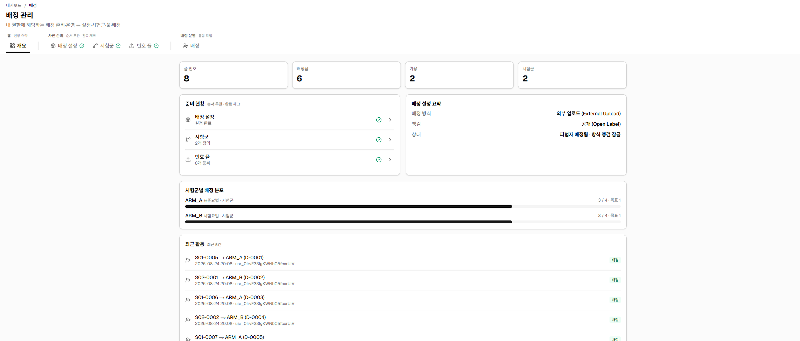
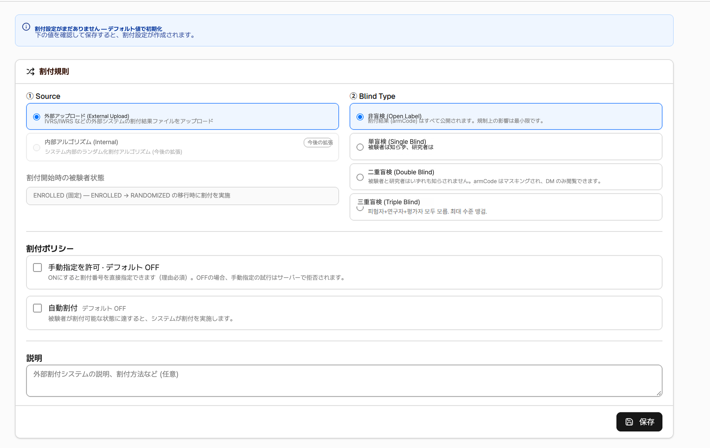
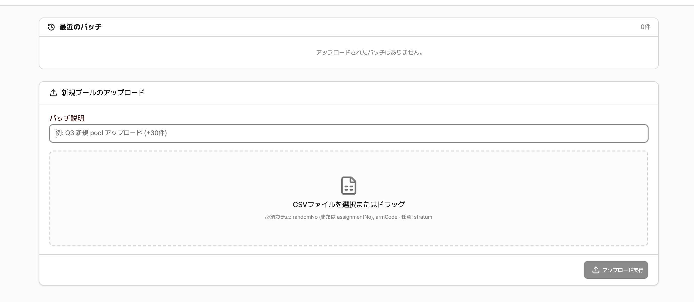
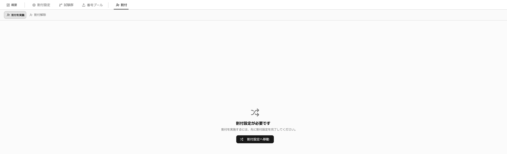
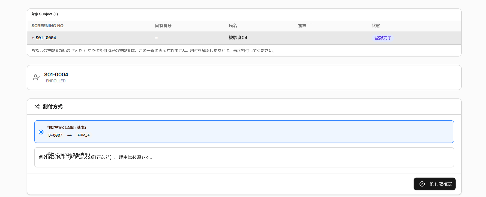
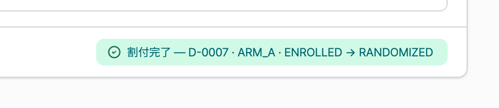
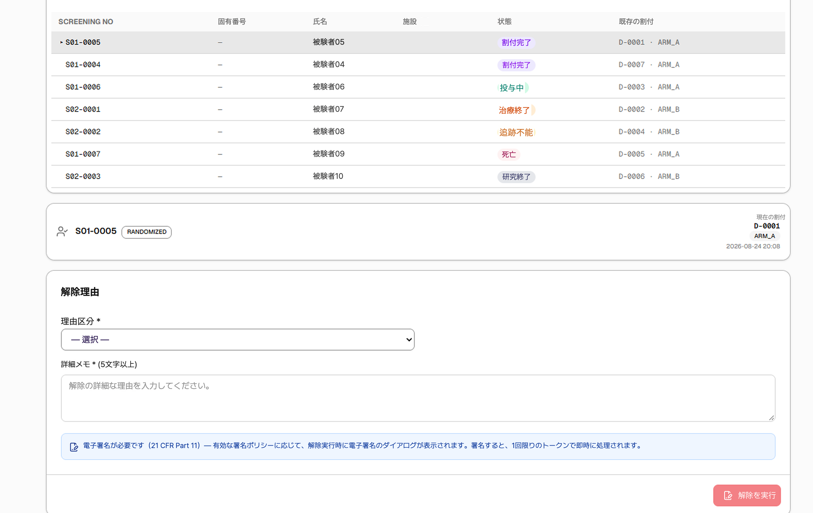

割付
SCR-RAND-007 · 割付設定 · 試験群 · 番号プール · 割付実施 · 割付解除
割付管理の概要
- 1.1画面構成
- 1.2準備を終えたあと
1.1画面構成
概要
ランダム化割付を準備し、実施する画面です。上の横タブは概要 · 割付設定 · 試験群 · 番号プール · 割付の5種類で、タブを選ぶと画面を移動せず、その場で内容が切り替わります。前の3つが事前準備、最後のタブが割付運用です。
画面説明

横タブ — 5つのタブを切り替えます。担当の権限がないタブには錠のアイコンが表示され、選択できません。
設定する > — 割付設定タブにすぐ移動します 2.1。
試験群を定義 > — 試験群タブに移動します 2.2。
準備状況の各行も、選択すると該当するタブに移動します。
左メニューの研究管理 > 割付が常時の入口です。ロール別ダッシュボードの割付ウィジェットからも入ることができます。
移動経路はダッシュボード / 割付です。
タブの上の小さな文字が、まとまりを示します — ホーム · 事前準備(順序は問いません · 完了チェック) · 割付運用(統合作業)。
指標は4種類 — プール番号 · 割付済み · 利用可能 · 試験群です。準備前はすべて0です。
準備状況 — 3つの準備が完了したかどうかを示します。空の丸は未完了、緑のチェックは完了です。順序は問いませんので、やりやすいものから進めて構いません。
最近のアクティビティ — 割付・解除・アップロードの記録が、直近5件表示されます。
副題の「自分の権限に応じた割付の準備・運用」— 見えるタブやボタンが、人によって異なるという意味です。
注意事項
必須確認 データ破損 · フォーム完了不可
- • 現在の割付画面は、システム管理者しか見ることができません。テストが終わっていないため一時的に閉じてあるもので、割付権限のあるデータ管理者・研究責任者(PI)でも、左メニューに割付の項目が表示されず、URLで直接入ろうとしても遮断されます。権限設定の問題ではないため、権限管理から探さず、システム担当者に公開予定を確認してください。
1.2準備を終えたあと
概要
準備の3つを終えると、同じ概要画面がこのように変わります。指標に実際の数値が入り、設定の要約と試験群ごとの分布・最近のアクティビティが埋まります。運用中は、この画面を見るだけで割付がどこまで進んだかがわかります。
画面説明

タブの丸が緑のチェックに変わります — 準備が終わったという表示です。
指標 — プール番号(アップロードした番号の数) · 割付済み(すでに使った数) · 利用可能(残りの数) · 試験群の数です。利用可能が減ってきたら、番号をさらに追加する必要があります。
準備状況の下の小さな文字が、設定完了 · 2件の定義 · 8件の登録のように、実際の値に変わります。
割付設定の要約 — 割付方式と盲検、そしてステータスが表示されます。キャプチャの「被験者割付済み · 方式・盲検ロック」は、すでに割付が始まっており、設定を変更できないという意味です 2.1。
試験群別の割付分布 — 割付数 / プール数と目標比率です。棒グラフはプールに対する消化率で、目標比率とは別の軸です。
最近のアクティビティ — 被験者 → 試験群 (割付番号)の形式で、右のバッジが割付・手動指定・解除・アップロードを色で区別します。
タイトルと移動経路は、準備前と同じです。
注意事項
必須確認 データ破損 · フォーム完了不可
- • 利用可能な番号が0になると、割付をこれ以上行えません。割付実施画面で「割付可能な番号がありません」と表示されて止まるため、この指標を定期的に確認し、番号プールを事前に追加でアップロードしてください 2.3。
事前準備
- 2.1割付設定
- 2.2試験群
- 2.3番号プール
2.1割付設定
概要
割付のルールを決める画面です。4つのブロックで構成されており、一度保存すると段階ごとにロックされます。番号プールをアップロードすると盲検が、被験者が割り付けられると方式までロックされます。そのため、最初にきちんと決めておくべき画面です。
画面説明

① Source (割付方式) — 外部アップロードが選択されています。IVRS/IWRSなど外部システムで作成した割付結果を、ファイルでアップロードする方式です。
② Blind Type (盲検) — 非盲検・単盲検・二重盲検・三重盲検から選びます。各項目の下に、誰が割付結果を知ることができるかが書かれています。
手動指定を許可 — 初期設定はオフです。オンにすると、割付実施で番号を直接指定できるようになり、理由が必須になります。オフのままだと、その操作自体が拒否されます 3.2。
自動割付 — 初期設定はオフです。オンにすると、被験者が割付可能な状態になった瞬間に、システムが割付を実行します。
④ 説明 — 外部割付システムの名前や割付方法を書き留めておきます。任意項目ですが、ロックされたあとも編集できる唯一の項目です。
保存 — 設定を作成します。最初の保存で割付設定が作られます。
「割付設定がまだありません — デフォルト値で初期化」 — 値を確認して保存すると、その時点で設定が作成されます。
内部アルゴリズム (Internal) は今後の拡張のため選択できません。現在は外部アップロードのみに対応しているため、番号プールのアップロードが必ず必要です。
割付開始時の被験者状態はENROLLED(登録完了)に固定です。変更できず、登録完了の状態の被験者だけが割付の対象になります。
盲検のレベルが上がるほど、割付結果を見られる人は減ります。二重盲検からは試験群コードが隠され、データ管理者だけが照会できます。
③ 割付ポリシーの2項目は、どちらも初期設定でオフです。
注意事項
必須確認 データ破損 · フォーム完了不可
- • 割付方式と盲検は、後から変更できません。番号プールをアップロードした時点で盲検が、最初の被験者が割り付けられた時点で方式までロックされ、その後は説明だけを編集できます。各段階で画面の上にロックの案内が表示されるので、プロトコルの割付計画を確定してから保存してください。
2.2試験群
概要
被験者を分けるグループを定義します。試験群・対照群・プラセボ群の3種類があり、番号プールファイルのarmCodeカラムが、ここで定義したコードと一致している必要があります。そのため、番号プールより先に作っておくほうが安全です。
画面説明

+ 新規試験群 — 試験群を追加するウィンドウを開きます。入力項目はコード(armCode) · 名前 · 種類 · 目標比率です。
タブで試験群が選択された状態です。他の準備へすぐに移動できます。
登録前は空の状態の案内が表示されます。登録すると、コード · 名前 · 種類 · 目標比率 · 割付数 · アクションのカラムからなる表に変わります。
下の案内 — 「armCodeは作成後に変更できません (Immutable)。割付履歴のあるArmは削除できません。」
右上のバッジは現在のご自身のロールです。試験群の編集には、割付設定の権限が必要です。
注意事項
必須確認 データ破損 · フォーム完了不可
- • 試験群のコードは作成後、最後まで変更できません。番号プールファイルと外部割付システムが同じコードを使うため、プロトコルに書かれた表記をそのまま入力してください。割付履歴が生じたあとは削除もできなくなり、名前・説明・目標比率だけを編集できます。
2.3番号プール
概要
外部割付システムが作成した割付番号の一覧を、CSVファイルでアップロードします。割付方式は外部アップロードの1つだけなので、この段階を飛ばすと割付を実施できません。一度にすべてアップロードする必要はなく、番号が足りなくなったらバッチを追加でアップロードして継ぎ足します。
画面説明

バッチ説明 — 今回アップロードする束を区別するための名前です。「例: Q3 新規 pool アップロード (+30件)」のように、何をアップロードしたかがわかるように書いてください。
CSVファイルを選択またはドラッグ — ファイルを選ぶと内容を事前に検査し、問題のある行を知らせます。
アップロード実行 — ファイルを選ぶまでは薄く表示されます。
最近のバッチ — これまでにアップロードした束の一覧です。右の数字が件数です。
ファイル形式の案内 — 必須カラムはrandomNo(または assignmentNo)とarmCodeで、stratumは任意です。armCodeは試験群で定義したコードと同じである必要があります 2.2。
アップロードしたバッチがない場合は、空の状態の案内が表示されます。
注意事項
必須確認 データ破損 · フォーム完了不可
- • 同じ割付番号を2回アップロードすることはできません。ファイル内で重複している場合や、すでにアップロードした番号と重なる場合は、その行が除外されます。追加でアップロードする際は、外部割付システムで新しく発行した範囲だけをダウンロードして、アップロードしてください。
割付運用
- 3.1割付実施 (準備が不十分な場合)
- 3.2対象の選択と割付の確定
- 3.3割付解除
3.1割付実施 (準備が不十分な場合)
概要
割付実施画面は、準備がどこまで済んでいるかによって表示が変わります。行き詰まっている場合は何が足りないかを画面が直接示すため、案内を読んで該当する準備段階に戻ってください。
画面説明


割付実施 — 被験者に割付番号を割り当てます。
割付解除 — すでに割り当てた番号を取り消します 3.3。2つは同じタブ内の切り替えボタンです。
割付設定がない場合は、割付設定が必要ですと表示されて止まります。
割付設定へ移動 — その場で設定タブに移動します 2.1。
設定は終わっていても番号プールが空の場合、自動提案の欄に「割付可能な番号がありません。DMにプールのアップロードを依頼してください。」と表示されます 2.3。
その状態では割付を確定が薄く表示され、選択できません。
注意事項
誤解しやすい動作
- • 割付がブロックされたときに確認する順序は、概要の準備状況 → 空欄の項目 → そのタブ、です。3つの準備には決まった順序はありませんが、番号プールは試験群より先にアップロードできません。ファイルの試験群コードを検査するためです。
3.2対象の選択と割付の確定
概要
準備がすべて終わると、割付の対象となる被験者が表に表示され、1人を選ぶとシステムが番号を提案します。確定するまでは何も記録されないため、提案された番号と試験群を確認してから進めてください。
画面説明


対象 Subject — 割付可能な被験者の一覧です。行を選ぶと、下の内容がその被験者に切り替わります。
自動提案の承認 (基本) — システムが選んだ割付番号 → 試験群が表示されます。キャプチャではD-0007 → ARM_Aです。
手動 Override (DM専用) — 番号を直接指定します。割付のミスを修正するための例外的な操作で、理由が必須です。下の注意事項を必ず確認してください。
割付を確定 — 選択した方式で割付を記録します。被験者の状態が登録完了 → 割付完了に変わります。
括弧内の数字は、割付可能な被験者の数です。登録完了の状態の被験者だけが表示されます。
「お探しの被験者がいませんか？ すでに割付済みの被験者は、この一覧に表示されません — 割付を解除したあとに、再度割付してください。」
選んだ被験者のコードと現在の状態が、もう一度表示されます。別の人ではないか、ここで確認してください。
確定すると割付完了 — 割付番号 · 試験群 · 登録完了 → 割付完了が緑色で表示されます。別途の確認ウィンドウはありません。
注意事項
必須確認 データ破損 · フォーム完了不可
- • 手動指定は、権限と設定の両方が揃っていないと選択できません。データ管理者の権限があっても、割付設定で「手動指定を許可」がオフになっていると無効になります。画面が2つの理由を区別して知らせます。ランダム性を損なう操作のため、割付ミスの訂正など例外的な場合だけに使用してください。
3.3割付解除
概要
すでに割り付けた番号を取り消します。割付のミスを正す場合や、被験者が不適格と判定された場合に使い、解除した番号は再び使える状態に戻ります。監査証跡の対象のため、理由の記録は慎重に行う必要があり、プロジェクトの設定によっては電子署名が求められます。
画面説明

対象被験者を選択 — 割付された被験者がすべて表示されます。行を選ぶと、下の内容がその被験者に切り替わります。
理由区分 * — 割付のミス · 被験者の不適格判定 · Protocol Amendment · その他の4つから選びます。
詳細メモ * — 5文字以上の入力が必要です。監査証跡にそのまま残ります。
解除を実行 — 必須項目がすべて入力されると選択できます。投与中の被験者の場合は、入力する項目が増えます(下の注意事項を参照)。署名が必要な設定の場合は、選択した瞬間に電子署名のウィンドウが表示されます。
状態列 — 割付完了の被験者だけでなく、投与中・治療終了・追跡不能・死亡・研究終了の被験者も一覧に表示されます。ただし終了状態の被験者は、選択しても解除できません(下の注意事項を参照)。
既存の割付列 — 割付番号 · 試験群です。解除対象を確認する際に使ってください。
選んだ被験者の現在の割付(番号 · 試験群 · 割付日時)が、右側に再度表示されます。
「電子署名が必要 (21 CFR Part 11)」 — 有効な署名ポリシーがあるプロジェクトでのみ表示されます。ない場合は、署名なしですぐに処理されます。
注意事項
必須確認 データ破損 · フォーム完了不可
- • 終了状態の被験者は、割付を解除できません。治療終了・追跡不能・死亡・研究終了の被験者を選ぶと「Terminal 状態の被験者は割付解除不可」という警告が表示され、解除の実行が有効になりません。一覧に表示されることと、解除できることは別のことです。
- • 投与中の被験者を解除するには、別の研究責任者(PI)の承認が必要です。理由区分と詳細メモに加えて、PI承認者の識別子と、解除後に被験者をどの状態にしておくかを画面で一緒に指定する必要があります。早期終了として処理する場合は、治療終了の理由まで選択します。承認者はあらかじめ決めてから始めてください。
誤解しやすい動作
- • プロジェクトの状態によっては、解除そのものがブロックされます。終了・保管の段階では、理由を入力しても解除の実行が有効になりません。解除の記録は修正も削除もできません。